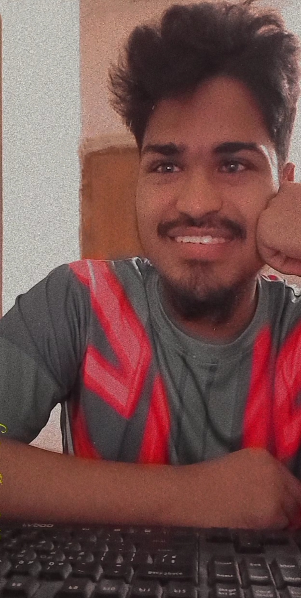

Joshim Uddin
~Pro-gamer
Recent post:-
Joshim Uddin
5 mins.
Updated a status.
My code never has bugs, it just develops random unexpected features. A programmer is a person who fixed a problem that you don’t know you have, in a way you don’t understand.
Joshim Uddin
50 mins.
Updated a status.
A programmer is just a tool which transforms caffeine into code..
Recommend to you:
Follow +
 Follow +
Follow +
Follow +
Follow +